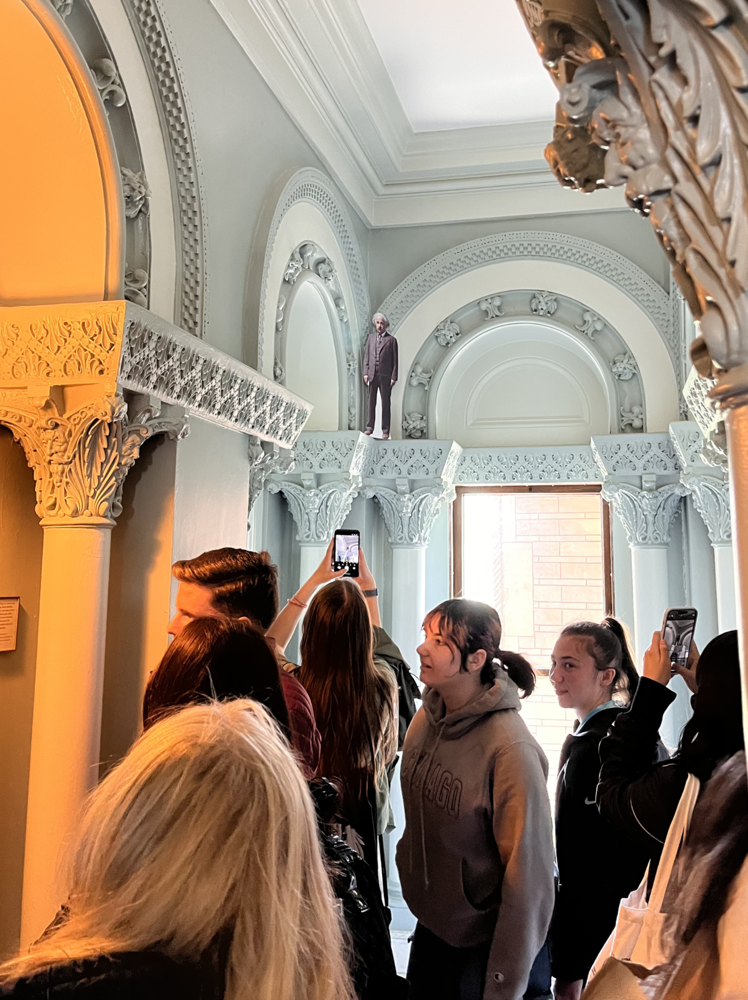

It looks like a monument. To what, I was about to find out shortly.
Ornate arches adorn its walls, which serve no obvious instrumental purpose. The walls are constructed from beige stone instead of the sleek, reflective metal that might be more commonly associated with observatories.
It allows the structure to blend in with the surrounding nature -- grass swaying carefreely in the breeze, accompanied by the faint sounds of the gentle waves of Williams Bay, Wisconsin. If this is a place of science, it is far more than a sterile laboratory.
Also, that's a big dome. We'll get to that soon.
As I hopped off the bus with my friends from the Ryerson Astronomical Society, we were greeted by an impressive facade and our tour guides for the day.
The engraved words and numbers on the entrance's facade reminded us of our connection to this historic building.

The Yerkes Observatory had been founded as an institution of the University of Chicago in 1895. We were there as undergraduates of that same University, more than 130 years later. Many of us present were studying Astrophysics.
The utterance "This is so cool!" was echoed many times that day, usually paired with a dropped jaw and the wild flailing of hands.
Our tour, however, did not commence with a heartfelt treatise of astronomers' love for the stars. It began with economics.
Observatories take money to build. Fundraising played just a critical role in fuelling science as it does today. The observatory's founding astronomer, George Ellery Hale, was looking for a benefactor in the early 1890s.

A bust of George Ellery Hale.
He found his donor in Charles Yerkes, the "most hated man in Chicago." Yerkes had become deeply unpopular for ruthlessly building railways that cut through Chicago neighborhoods and displaced households.
Yerkes, seeking to rehabilitate his image, decided that the Observatory would be a good investment. Yerkes contributed $800,000 to the observatory, worth about $30 million today.
The observatory's location in Williams Bay is a legacy of Yerkes' determination to make sure his rich peers would notice his contribution. Many of the wealthiest folks in Chicago often vacationed in Williams Bay, and would certainly notice the looming dome from their residences.
The charm offensive did not succeed on the observatory's architect, Henry Ives Cobb. Cobb's designs do not feature Yerkes particularly flatteringly.

Yerkes, with a displeased frown.
Charles Yerkes's face appears no less than 256 times on the walls and pillars of the building. On some pillars not depicted here, Yerkes is depicted with devil horns.

A quiet alcove. More Yerkes imagery stares down from above.
The history of science, like all histories, resists simple narratives. It is difficult to ascertain whether I ought to reflect on Charles Yerkes's name with gratitude or disdain.
The year before our visit, billions of dollars of federal grants for science had been cut. In times like these, does science need all the allies it can get, even if their histories might be morally dubious?

This panel can expand naturally depending on how much content is inside it. The wrapper remains vertically centered when the content is short, but still allows the section to grow taller than the viewport if needed.
At the end of a long corridor that connects the central atrium to the classrooms, there is a staircase about eight feet wide. It climbs high enough that it appears to lead to the third floor of the building.
At the top of that staircase is the largest refracting telescope in the world.

The structure holding up the telescope was not originally blue. It was once brown, but it had been repainted in the 1960s after a slate of astronomers from Yerkes had been handpicked to lead positions at NASA.
The spiral staircase by its right side provides access to the motors that control the angle and rotation of the telescope.
It would not, however, be where the astronomers looked through the telescope or collected light for their photographic glass plates.
That was done on the other end of the telescope, closer to the ground. This end of the telescope also has a wheel. The telescope is so perfectly counterbalanced that a person would be able to use the wheel to rotate the telescope if required.
But the eyepiece is unusually far off the ground, which could pose a problem for astronomers, most of whom are not twelve feet tall. A ladder could help make up the difference, but would it always be enough?

A painting of an astronomer, which I found lying around in the Observatory's basement.
Why not simply move the entire floor up and down?
The wooden floor is a massive elevator. Always has been, since the turn of the 20th century.
When astronomers would use the telescope to observe the night sky, they would crack open the dome to form a slit just large enough so that the Telescope could peek at the night sky, but small enough to protect the telescope from the elements.
What if the celestial object of interest was misaligned with the slit?
Move the slit, of course. By rotating the entire dome.